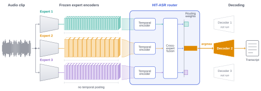
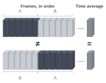

Under review · IEEE Transactions on Audio, Speech and Language Processing
HIT-ASR
Hierarchical Transformer Routing for Adaptive ASR Expert Selection
Bilkent University

Abstract
Different pretrained automatic speech recognition (ASR) systems excel under different acoustic conditions, speakers, and domains, so that the system that best transcribes a given clip is not known in advance and varies from clip to clip. We study how to select, for each clip, one system from a pool of complete, frozen, and heterogeneous ASR systems before any of them decodes. We introduce HIT-ASR, a hierarchical transformer router that operates on the frame-level encoder states of every expert: a per-expert temporal encoder summarizes each expert's frame sequence at that expert's native frame rate, a cross-expert fusion step combines the summaries, and a WER-aware objective trains the router on the measured error of every expert on every clip. We evaluate HIT-ASR on four corpora (AMI-SDM, Earnings-22, People's Speech, and AfriSpeech-200), each with its own trio of current open ASR systems. HIT-ASR attains the lowest word error rate (WER) on every corpus, 6.3–11.2% relative below that of the best single expert. Its improvements over the best single expert, over a pooled-feature router trained with the same WER-aware objective, and over two hypothesis-level ensembles are statistically significant on every corpus. At inference, all K expert encoders run once per clip, the router operates on their states, and only the selected expert is decoded. Measured end to end on raw audio, HIT-ASR requires less computation time per clip than the best single expert on three of the four corpora. The code, the data, and a reproducibility package are publicly available.
Method

Pooling the encoder outputs over time may erase short patterns that decide which expert is best. HIT-ASR instead hands each expert's frames, in order, to a transformer, which looks across the whole sequence. It attends to the frames that matter rather than weighing them all equally.
Results
Lowest WER on all four corpora, closing 18.2 to 34.1% of the oracle gap
| System | AMI-SDM | Earnings-22 | People's Speech | AfriSpeech-200 |
|---|---|---|---|---|
| Best single expert | 18.42 | 12.79 | 17.39 | 25.82 |
| ROVER (confidence-weighted) | 20.03 | 13.60 | 18.15 | 31.17 |
| ADASTT | 18.23 | 12.82 | 16.78 | 24.84 |
| MLP-pool | 17.44 | 12.14 | 16.29 | 23.71 |
| HIT-ASR | 17.19 | 11.98 | 15.80 | 22.93 |
| Oracle (per clip) | 11.68 | 9.00 | 12.74 | 17.51 |
Saves 40 to 90% of the time of decoding every expert
It is even faster than the best single expert on three of the four corpora
| Corpus | HIT-ASR | Best single | Decode all | Saved |
|---|---|---|---|---|
| AMI-SDM | 106.4 | 42.2 | 177.8 | 40 |
| Earnings-22 | 217.0 | 1965.3 | 2106.3 | 90 |
| People's Speech | 156.5 | 215.1 | 298.9 | 48 |
| AfriSpeech-200 | 133.0 | 271.5 | 658.8 | 80 |
BibTeX
@article{karaca2026hitasr,
title = {{HIT-ASR}: Hierarchical Transformer Routing for
Adaptive {ASR} Expert Selection},
author = {Karaca, Huseyin and Namli, A. Samil and
Kozat, Suleyman S.},
year = {2026},
note = {Under review},
url = {https://hkaraca.com/hit-asr/}
}